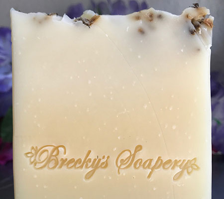
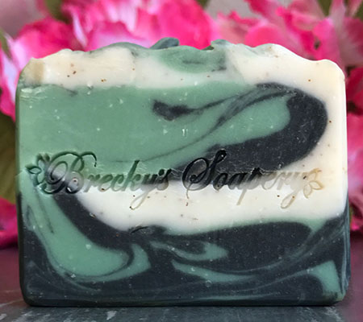
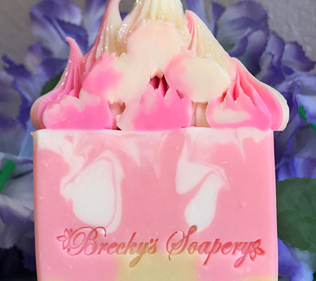

Natural
Simply Natural with No Extras
Our facility includes a variety of naturally made soaps with no fragrances or colors. This category also includes soaps made with lard or tallow. They contains higher omega-7, omega-9, conjugated linoleic acid, and vitamins A, D, E, K, and B12 than plant-based fats – all these are essential to radiant, healthy skin. They are stable fats that produce rich, creamy lather with nice cleansing properties. They also make for nice, hard bars that won't melt away in the shower.
- Tallow
- Lard
- No Fragrances
Classic
Colorful and Aromatic Soaps
This Classic soap category has everything that natrual does not. It may include light to heavy fragrances to essential oils. Clays, additives such as pumice and other natural seeds for exfoliating and decorative items like jems stones and glitter. This category has it all.
- Fragrances and Essential Oils
- Additives: Clays, pumice, glitter and more.
- Colors that make the rainbow jealous.
Designer
Special and Unique Designs
If you love hand crafted soaps then you will fall in love with these colorful, creately desgined, and delicously devine smelling soaps. We make multi-layered bars, dessert style soaps, and XXL manly-hands soap...meaning they would take two hands for me to use them. LOL! Okay, maybe not that big but they are much larger than our standard 4-6oz designs.
- Cupcakes
- Jems and Jewels
- XXLarge Bars